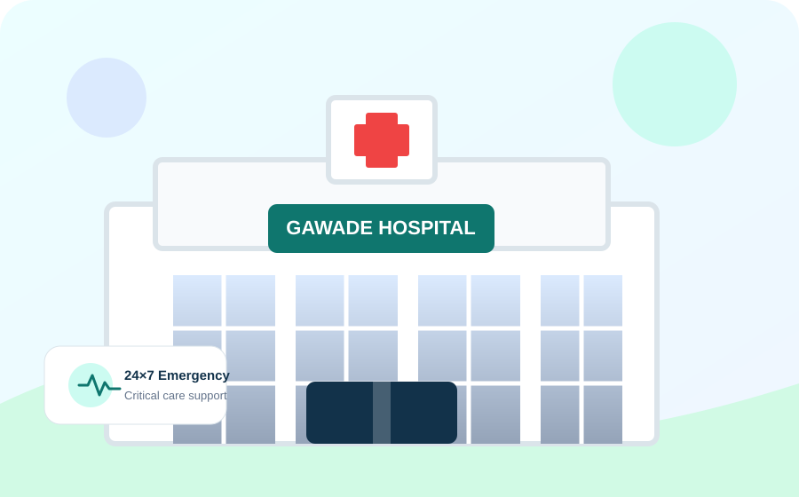

Surgery
Surgical Services
General, laparoscopic, orthopedic, neuro, gastro, pediatric, plastic, urology and spine surgery.
Explore surgical care →From advanced surgery and critical care to maternity, pediatrics, fertility, diagnostics and 24×7 emergency services — Gawade Multispeciality Hospital brings coordinated specialist care under one roof.

Explore the hospital’s major clinical service groups and book directly through the same patient-friendly flow.
General, laparoscopic, orthopedic, neuro, gastro, pediatric, plastic, urology and spine surgery.
Explore surgical care →
General medicine, neurology, gastroenterology, nephrology, oncology, diabetes and critical care.
Explore medical care →
Gynecology, pregnancy, maternity, fertility, IVF, pediatrics, newborn care and family planning.
Explore women & child care →
Radiology, X-ray, sonography, pathology, 24-hour laboratory, 2D Echo and ECG.
Explore diagnostics →
ENT, dermatology, dental, ophthalmology, pain services and other focused specialty clinics.
Explore specialty clinics →Emergency response, trauma, accident care, toxicology, stroke and cardiac emergency support.
Explore emergency care →Gawade Multispeciality Hospital provides advanced medical and surgical care supported by modern ICU services, emergency care, imaging and pathology facilities. Its stated focus is affordable, patient-centric healthcare with access to insurance and government health schemes.
About our mission & valuesMeet doctors across surgery, gynecology, pediatrics, orthopedics, gastroenterology, neurosurgery, cardiology, dermatology and ophthalmology.

MBBS, M.S., FIAGES, FMAS

MBBS, M.S., FMAS (Obstetrics & Gynecology)

MD (Pediatric)

MBBS, MS (Ortho)
ICU and bedside monitoring with continuous nursing support.
Equipped surgical areas with sterile environments and real-time monitoring.
Emergency and routine laboratory testing with quick reporting.
Access to prescribed medicines and medical supplies within the hospital.
The hospital lists major private insurers, TPAs and government schemes including MJPJAY and AB PM-JAY.
The source website currently displays a Google rating of 4.8 based on 201 reviews. Ratings can change over time.
“Doctor are awesome best staff. Good service and best treatment.”
Gavhane RahulGoogle review displayed by hospital“Staff and doctors are cooperative, polite, and caring… The hospital is clean and provides fast service.”
Phapale UlhasGoogle review displayed by hospital“Staff is very polite and cooperative. Doctors support was exceptional… from admission to discharge.”
Gaurav WaghmareGoogle review displayed by hospitalNear ICICI Bank, Rajgurunagar, Maharashtra 410505.
This static website does not store your form data. On submission, it opens WhatsApp with the appointment request for you to review and send.